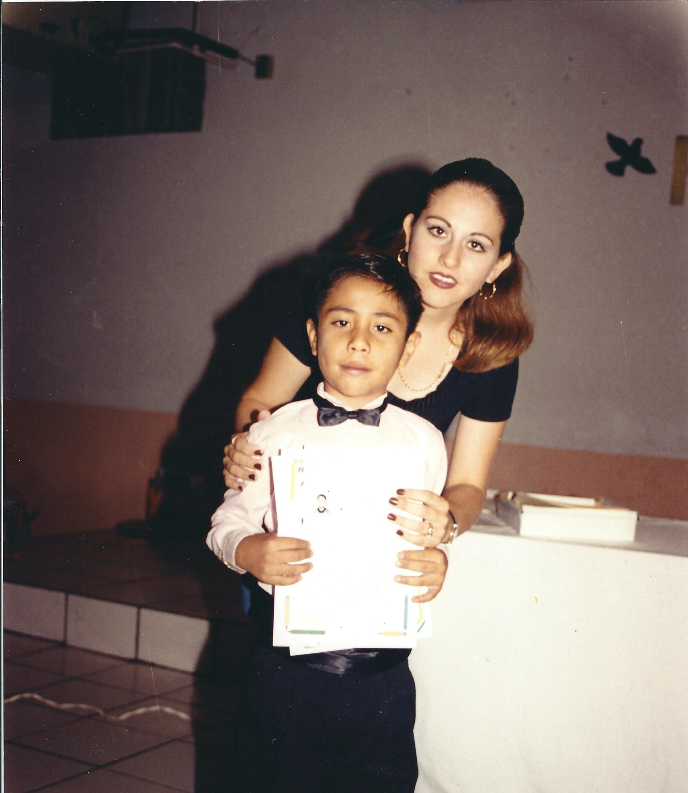

Mi historia comienza cuando yo tenía como unos 3 añios en ese entonces vivíamos en infonavit macapule justo al lado de la casa de mi abuelo materno, solo recuerdo jugar con mis hermanos y un primo. No había mucho que hacer, aparte que no nos dejaban salir mucho porque en aquel entonces había mucho maleante, al poco tiempo mis padres deciden comprar una casa en la que hasta el día de hoy vivimos en el Fracc. San Fernando cuando recién nos mudábamos solo estaban habitadas 4 casas en toda la calle para mí fue una decepción ya que pensaba que habría mas niños para jugar. No fue sino casi 3 meses después que se mudaría una pareja con dos hijos Luis(tocayo) y Alberto su hermano menor desde ese día fue mi amigo y unos de los mejores hasta el día de hoy.
Luis y yo hace tres año antes de que se murada a tijuana
Estuve en dos kínder diferente, el primero fue donde conocería a varios compañeros de la escuela y esta alado de la secundara a la cual iría más tarde, no había muchos juegos unos columpios y un sube y baja que siempre estaban ocupados, por lo general en el receso solíamos llevar unas Sabritas y un jugo de lonche, nos pasábamos el tiempo de receso platicando o jugando con los legos que veces llevaba. Estuve solo un año al siguiente mi mama por cuestiones de tiempo me inscribió a un kínder que estaba cerca de nuestra casa. Recuerdo que hicimos varios campamentos, obras y desfiles también fuimos muchas excursiones. Aunque me lleve muy bien con los demás no hice amigos en ese kínder
Fui a la primaria Manuel Romero Camacho, solíamos jugar en cancha de futbol ya que no había nada más para jugar. La cancha tenía más piedras que pasto caerse en ella era un raspón asegurado. Como la escuela estaba rodeada de casas. Siempre que jugamos teníamos problemas con los vecinos ya que siempre se volaban el balón la mayoría de las veces caía en la casa de una pareja de ancianos, la parte de su porche tenia techo de lámina así que hacía mucho ruido cuando tirábamos el balón fue tanto el enojo de los vecinos que la escuela decidió poner una cerca casi el tripe de alto para que dejáramos de arrojar cosas a las casas, tipico que justo antes de salir empesaron a poner techumbre y una parte con juegos recreatibos tambien una biblioteca solo pudimos usarlar unos meses anter de graduarnos
En mi gruduacion de la primaria

Cuando tenía 10 fui de viaje a Tepic Nayarit con mi mama y mi abuelo fuimos a visitar a unos familiares. fue la primera vez que salía de viaje, para ser mi primer viaje fue muy aburrido ya que no iban mis hermanos y había con quien jugar o pasar el tiempo aun que fue una buena experiencia ver lugares distintos. Cuando ya veníamos de regreso fue que nos roban varias cosas entre ellas la cámara y mi GB color (u.u).